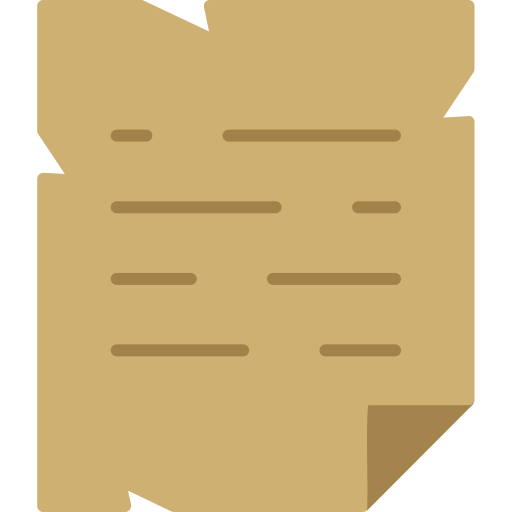

Recent |
Audio Books |
中国图书馆 |
US Library |
My ID |
|||
Book List |
Tips&Tools |
 Rarely Used |
Cloud Engine |
For Kids |
Recent
- Anna's Archive
- ZLibrary
- Library Genesis [1] Guide: [Online] [Offline]
- Libby
- Hoopla [audiobook]
- Kanopy: 类似Hoopla，合作图书馆少
- Internet Archive
- Open Library
- The Pirate Bay
- 豆瓣网
- JSTOR
- Cloud Library [NYPL入口]
- O'Reilly: UR账号登录
 Audio Books
Audio Books
云图有声
新语听书
- 中山纪念图书馆
- 浙江图书馆：不太稳定
其他
- Overdrive | 赛阅
- Librivox：免费，志愿者录制
- Lit2go：每本书还配有PDF文档
- RUSC：英语广播剧，可下载
- Audiobook Treasury：MP3可下载，很多福尔摩斯和爱伦坡的著作
- Loyal Books：文史哲的有声书很多
- Open Culture：900余本经典英文文学名著有声书，可以在线收听或免费下载
- ThoughtAudio：有文学和哲学经典著作
- 喜马拉雅 [国际版]：有免费版，付费版约199元 / 年，时常有捆绑优惠
- 蜻蜓FM：有免费试听内容，购买蜻蜓超级会员连续包月18元
- 荔枝FM：免费，App内提供购买项目
- 懒人听书
- 国内的QQ阅读、咪咕阅读、微信读书，苹果上有iBooks，上面定期会有免费的有声书，大部分有声书支持付费购买
- AudioBook Bay: use torrent
中国图书馆 China Library
支持Libby的
- 首都图书馆 | 数字资源

- 浙江图书馆 | 数字资源
- 湖北省图书馆 | 远程访问
- 深圳图书馆 | 深图古籍
- 中山纪念图书馆 | 数字资源
- 杭州图书馆
- 长沙图书馆
- 温州市图书馆: 官网打不开，Libby已登入
- 东莞图书馆 | 松山湖分馆
需实地办证或实地激活
- 宁波图书馆 | overdrive：通过微信小程序“甬图读者证”可注册，但是会检测定位，对定位有要求
- 苏州图书馆 | overdrive：苏州图书馆公众号->e读书->申请数字阅读平台阅读证，可申读者证，但需定位在苏州地区。
- 上海图书馆 | overdrive：需实地激活
- 上海静安区图书馆 | overdrive：无单独注册，与上海图书馆一卡通
- 上海徐汇区图书馆 | overdrive: 恐怕也是跟上面的一样，未试
- 武汉江汉区图书馆 | overdrive
- 深圳大学图书馆
- 海南省图书馆
- 深圳福田区图书馆
- 潍坊市图书馆：需梯子，微信公众号无注册功能。
- 北京市 通州区图书馆
- 石景山图书馆
- 诸城市图书馆：实地办证，可Libby
- 香港公共图书馆
需特殊证件：如学生老师证、当地身份证
- 中国社会科学院图书馆 | overdrive：数字资源或不需注册即可下载，未详研
- 香港中文大学（深圳） | overdrive
- 复旦大学管理学院图书馆 | overdrive
- 香港中文大学图书馆
- 台北公共图书馆
- 澳门公共图书馆
- 北京大学图书馆
已知不支持Libby的
已办妥读者证的
- 成都图书馆 | 数字资源 | 都市圈公共图书馆
- 珠海金湾图书馆：官网已无赛阅链接。需梯子。
- 嘉兴市图书馆：或者也可通过“图书馆信用服务”支付宝生活号借书。需梯子。官网会检测IP。没看到赛阅链接。
- 山东省图书馆 | 数字资源
- 中国国家图书馆 | 读者云门户
- 重庆图书馆 | 数字资源
- 青岛市图书馆 | 数字资源
- 淄博市图书馆
- 福建省图书馆 | 数字资源
- 广东省立中山图书馆
- 广州图书馆
- 珠海市图书馆
- 四川省图书馆 | 数字资源
暂未办妥或因故无法办理读者证的
- 西湖区图书馆
- 全国图书馆参考咨询联盟 | 联盟门户：可能不是一回事儿
- 汕头市图书馆: 即便用粤读通扫描登录页显示账号密码错误，奇怪，过会儿再试
- 佛山市图书馆：打开主页的时候进入黑名单页面，不知为何，过段时间再试试
- 萧山图书馆：数字资源不多，未办证。
- 深圳宝安区图书馆
- 韶关图书馆
- 河源市图书馆
- 梅州市剑英图书馆
- 惠州市图书馆
- 汕尾市图书馆
- 江门市图书馆
- 阳江市图书馆
- 湛江市图书馆
- 茂名市图书馆
- 肇庆市图书馆
- 清远市图书馆
- 潮州市图书馆
- 揭阳市图书馆
- 云浮市图书馆
- 之江图书馆
- 黄岩图书馆
- 济南市图书馆：线上办证押金50元，不支持在线退钱。未办。
- 内蒙古自治区图书馆：需梯子。实地办证。
- 昌邑市图书馆：实地办证
- 天津图书馆：实地办证
- 瑞安市图书馆：实地办证
- 阜宁图书馆：实地办证，微信公众号无注册功能
- 西宁市图书馆：需青海社保卡。没找到官网。
- 山西省图书馆：实地办证，微信公众号无注册功能
- 贵州数字图书馆：检测IP需在当地注册
美国图书馆 US Library
- The New York Public Library | Magazines & News
- UR River Campus Libraries
- NOVELny: Novel New York
- 联合国图书馆 UN-iLibrary: 浙江图书馆账号登录
- Literacy Rochester
- Little Free Library：线下免费图书点
- 美国国会图书馆
- Boston Public Library: 注册账号会检测是否在Massachusetts
- Los Angeles Public Library
- Chicago Public Library
Monroe County Library System
- Monroe County Library System
- Rochester Public Library
- Brighton Memorial Library
- Central Library of Rochester & Monroe County
- Charlotte Branch, Rochester Public
- Chili Public Library
- East Rochester Public Library
- Fairport Public Library
- Frederick Douglass Community Library, Rochester Public
- Gates Public Library
- Greece Public Library
- Hamlin Public Library
- Henrietta Public Library
- Irondequoit Public Library
- Lincoln Branch, Rochester Public
- Lyell Branch, Rochester Public
- Maplewood Community Library, Rochester Public
- Mendon Public Library
- Monroe Branch, Rochester Public
- Newman Riga Library
- Ogden Farmers' Library
- Parma Public Library
- Penfield Public Library
- Phillis Wheatley Community Library, Rochester Public
- Pittsford Community Library
- Rush Public Library
- Scottsville Free Library
- Scottsville Free Library, Mumford Branch
- Seymour Library
- Sully Branch, Rochester Public
- Toy Library at the Lincoln Branch, Rochester Public
- Webster Public Library
- Winton Branch, Rochester Public
书单收集：查阅新书 Book List
- Good Books: 名人推荐书单
- 微信读书
- 豆瓣阅读
- Amazon Best Books
- Good Reads: 亚马逊旗下书评网站
- 奥马哈的书虫书店（The Bookworm）每年都会列出推荐的巴菲特书单。
- Value 500 投资导航 书单
技巧 & 工具 Tips and Tools
WorldCat
添加有账号的图书馆，搜索时显示周边馆的内容
馆际互借 Interlibrary Loan
OCLC: Online Computer Library Center
有偿提供图书馆馆际互借服务。收费标准、服务范围需咨询具体图书馆。
使用方法：
1. 找到图书馆的 Interlibrary Loan 页面，申请一个 ILLiad 账号（iLLiad是OCLC开发的实现馆际互借的软件）；
2. 在WorldCat网站搜索想要的图书；
3. 如果截图中的1号框没有出现，那么需要简单设置一下上一步中申请了ILLiad账号的图书馆，以后打开网站会自动显示。如果感兴趣周围哪些图书馆有这本书，可以在2号框输入邮编，然后点Find Library，就可以看到离这个邮编最近的馆藏。
4. 显示出连接的图书馆后，点红色框里的“Logon to ILLIAD”，就会跳转到图书馆的ILLIAD登录页面，登录后可以看到系统自动填好的表单（不同图书馆界面可能不同）。通常点右上角的“Submit Request”（绿色框）就可以提交了。系统会用电子邮件通知进展，借到的话自己去图书馆前台拿。
小提示：
1. 在左边“Item Information”表单里，ISBN和OCLC Number这两项不是必选项，如果不是特地需要某个特别版本的书，就可以把这两项内容删除，另外右边“Options”表单“accept an alternate edition”的选项选成Yes，这样可以提高成功率。
2. 注意红色框那里的“Maximum Cost”的选项，选的是$0，就是说不愿意支付任何费用。这样系统在找到书之后，如果有费用产生，系统就自动取消。
3. 如果借中文书，“Will you accept this in a language other than English”要选“Yes”。
4. 笔者几个月来大约用这种方式借了80次书，超过一半都成功免费借到了。失败的情况有时候是系统找不到想要的书，有时候产生了费用，$10~$40不等，这些都由系统自动取消。
其他
- Kindle 书伴：相关的技巧。
- 在线图书馆：中美图书馆列表
- k2pdfopt：PDF重新排版工具
- 嘉图借书：支付宝小程序，仅限实体书，可以绑定已有读者卡，也可以直接靠芝麻信用申请虚拟卡，覆盖全国范围很多图书馆。
其他不常用方式 Rarely Used
悦学：网课
悦读：电子书籍
QQ阅读
其他
- Project Gutenberg: 古登堡计划
- 超能搜
- PDFDrive
- 爱问共享资料
- Standard Ebooks: 制作精美的英文公版书
- PUBee电子书库
- Kindleshare
- 我的小书屋
- BookFi: Library Genesis的镜子之一，支持PDF格式
- Obooko
- 易书：书籍检索
- Green Tea Press: Free books by Allen B. Downey
- 好读：中文电子书公益网站，提供 mobi、epub 等格式电子书下载。
- Amazon Free Books
- SRE Books: Google 提供的关于 SRE（Site Reliability Engineering）的免费电子书。
- NGINX Library：Nginx 提供的免费电子书，需要填写邮件获取下载链接。
- Baen Free Library: 提供免费的科幻、奇幻类书籍。提供在线阅读，也提供多格式下载，如HTML、MOBI、EPUB、RTF、SONY 电子书格式、微软阅读器格式等。
- DigiLibraries：免费电子书库，超过 20,000 本免费电子书，提供 MOBI、EPUB、PDF 等格式电子书。
- epubBooks：提供高质量 EPUB 格式和适用于 Kindle 的 MOBI 格式公版电子书，其中有许多办好插图和脚注。下载电子书前必须使用邮箱注册并激活账号。
- Girlebooks：免费的女性作家电子书，提供适合 Kindle 阅读的 PRC 格式，以及 EPUB、PDF、微软阅读器、PDB和纯文本格式。
- MobileRead（MOBI格式）；MobileRead（EPUB格式）：MobileRead 论坛的无版权电子书上传区，无需注册可直接下载。
- SaltTiger：最新出版的计算机技术类电子书。提供 MOBI、PDF、EPUB 格式下载。
- Let Me Read：英文电子书下载站点。有 EPUB、MOBI、PDF 格式，在页面底部的 Free sample 处下载。
- CODERPROG：英文电子书下载站点。有 EPUB、MOBI、PDF 格式，但并不是每本书每种格式都包含。
- Fox eBook：英文电子书下载站点。有 EPUB、MOBI、PDF 格式，但并不是每本书每种格式都包含。
- Planetebook：免费英文电子书下载站点。有 EPUB、MOBI、PDF 格式。
- index-of.es：免费英文计算机技术类电子书资源站点。有 PDF、CHM 格式。
- VDOC.PUB：免费外文电子书下载站点。有 EPUB、PDF、DJVU、MOBI 等多种格式。
- ProQuest EBook Central
 网盘搜索引擎 Cloud Engine
网盘搜索引擎 Cloud Engine
- Find-pdf-doc
- FreeFullPDF
- PDF Downloads
- Best CS Books
- 熊猫搜书
- ePUBw.COM | [备用加速线路
- 点书网 | [点书网-新域名]
- 如风搜
- 云盘狗：百度云网盘搜索
- 小可搜搜（需扫码关注）
- 史莱姆搜索
- 大圣盘（需扫码关注）
- 56网盘搜索
- 酷搜
- 小白盘（需扫码）
- 西林街搜索
- 58网盘搜索
- fastsoso（需扫码关注）
- 盘131
- 大力盘
- 小马盘搜索
- 百度网盘之家（显示维护中）
- SOSO云盘（显示维护中）
- 盘多多
- ireadweek: free kindle book; | [新域名]
- Kindle电子书分享 | [新域名
- 5kindle.com：免费电子书分享。
- Science.gov
- 全国图书馆参考咨询联盟
- 搜大宝
 少儿 For Kids
少儿 For Kids
Tumble Books
少年儿童图书馆
- 湖北省图书馆：新语听书 少儿版
- 江苏省少儿数字图书馆（南京图书馆） | 电子资源平台 | overdrive：需梯子
- 上海少年儿童图书馆
- 北京市西城区青少年儿童图书馆 | overdrive：实地办证
- 昆明少年儿童图书馆：不易打开的网站
- 上海少年儿童图书馆 | overdrive
- 江苏省少儿数字图书馆：需梯子
- 福建省少年儿童图书馆：实地办证，需梯子
- 广州儿童图书馆
NoveList K-8 Plus 少儿
提供大量分类书单，从图书馆接口进入并用图书馆卡登录即可。每本书有“Check Availablility”，可以看到本地图书馆有无此书。
其他少儿内容
- Great Schools Book Lists: 许多分年龄的主题书单
- Storynory: Audio Stories for Kids
- Raz-Kids：全球最知名少儿有声阅读软件，其资源语音和文字配搭，海量高质，可以供很长时间的系统学习。14天免费试用，之后$118/年